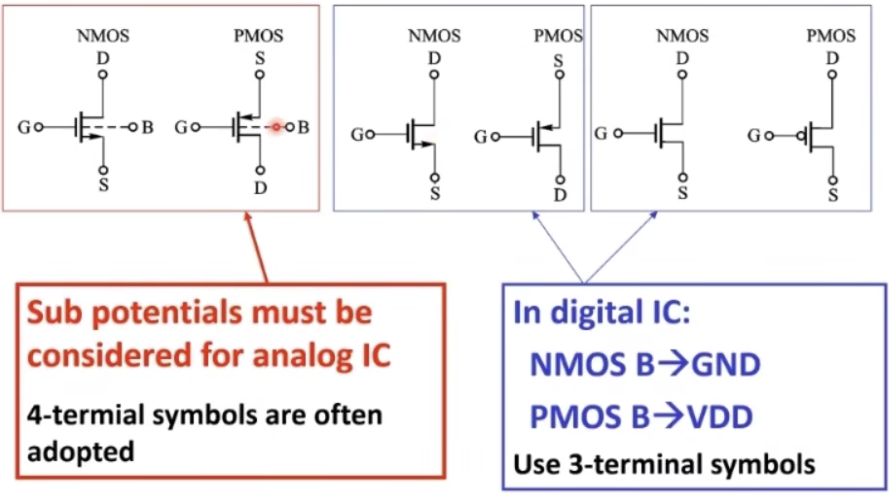
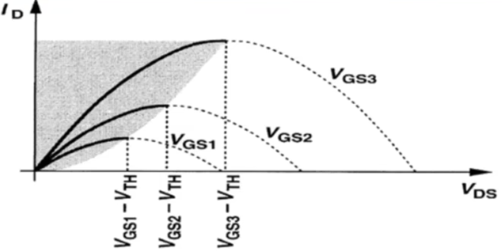
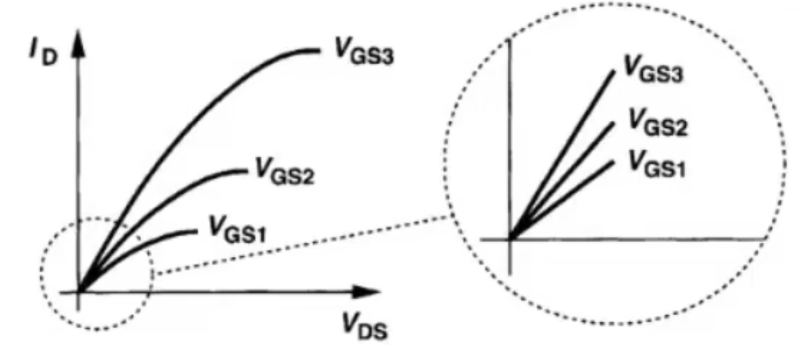
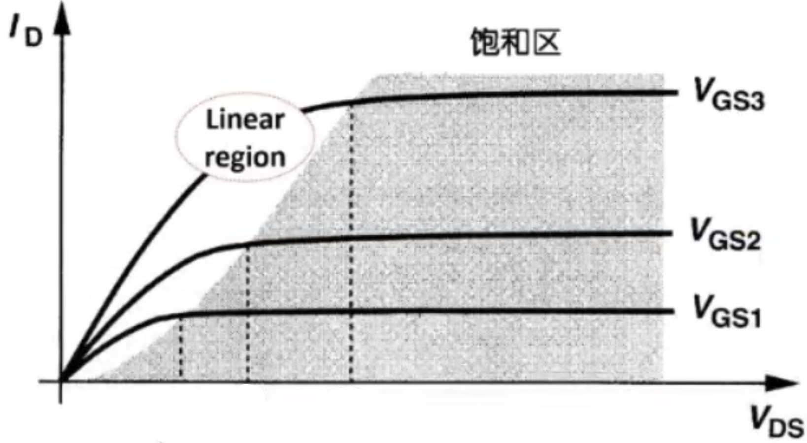
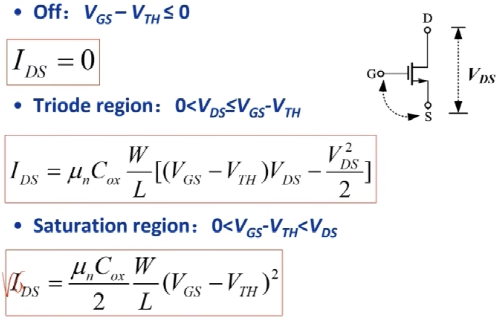
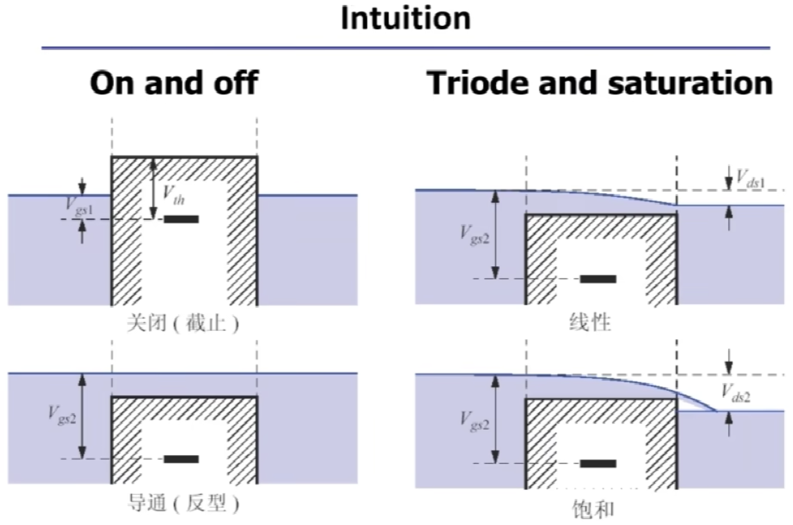

MOS器件物理
General considerations
MOS symbols

MOS as a switch
Need to know the threshold voltage \(V_{th}\).
MOS as a VCCS
MOS is also a voltage-controlled current source (VCCS).
Need to derive the I/V characteristics.
MOS I/V characteristics
Threshold voltage
When \(V_{G} = 0\), the MOS is off.
When \(V_{G}\) increases to a sufficiently positive value, the surface is "inverted" and the MOS is on.
The value of \(V_{G}\) at this point is called the threshold voltage \(V_{th}\). If \(V_{G}\) rises further, the charge density in channel continues to increase (\(I_D\) increases).
- \(\Phi_{MS}\): work function difference between the gate and substrate
- \(\Phi_{F}\): Fermi level
- \(Q_{dep}\): Charge density in the depletion region
- \(C_{ox}\): Gate oxide capacitance per unit area
Important note about \(V_{th}\)
For NMOS
the higher the substrate doping, the higher the \(V_{th}\).
For a given process under given temperature, \(V_{th}\) is almost constant.
I/V characteristics in triode region
Observations: \(I_D \propto W\)
In triode region
\(I_D\) is influenced by both \(V_{GS}\) and \(V_{DS}\).
\(W/L\) is called "aspect ratio", a design parameter.
\(\mu_n C_{ox}\) is a process parameter.

Application of NMOS in Triode region

深线性区（\(V_{DS}\)非常小），MOS管可以当成压控电阻，注意MOS管是压控器件
I/V characteristics in saturation region
\(V_{OD} = V_{GS} - V_{TH}\) is called "overdrive voltage".

Application of MOS in saturation region
当\(V_{DS}\)较大时，\(I_D\)不会随\(V_{DS}\)变化（非常缓慢），因此：
Saturated MOS can be used as voltage-controlled current source (VCCS).
NMOS I/V characteristics summary

